Fall of Glast Heim
- For the lv130 instance that gives access to Temporal Boots, see Old Glast Heim. For other uses, see Glast Heim.

|
| Spanish |
| This quest or instance is repeatable. | |||
|---|---|---|---|
| Difficulty | Cooldown | Tickets Available | |
|
Normal |
Resets at 0:00 |
Solo: 0 | Party: 0 |
|
Hard |
3 days |
Solo: 0 | Party: 0 |
Overview
| Requirements | |
|---|---|
| Base Level: | 130/170 |
| Starting Point: | glast_01 241/290 |
| Rewards | |
| Experience: | Normal: 16,250,000 (Base) and 12,000,000 (Job) Hard: 70,000,000 Base and 47,500,000 Job |
| Items: | Normal: 9  Curse Devoured Crystals Curse Devoured CrystalsHard: 6 Curse Devoured Gemstones, and 5 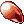 Curse Devoured Crystals |
Oscar is a dimensional traveller who invites the player to witness the tragic past of Glast Heim.
Himmelmez, an evil valkyrie, placed a Dimensional Orb deep into Glast Heim castle, aiming to absorb an endless supply of life force from the surrounding area and transfer it to another dimension.
In order to stop her evil plots, the sage Varmundt planned to destroy the orb, by shocking it with his entire life force.
King Schmidt's best friend, Heinrich, was unable to convince Schmidt to leave his people behind. Upon realizing Varmundt's plan, Schmidt sacrificed himself in order to destroy the orb.
Schmidt spirit became cursed by the Orb, and Oscar invites you, the player, to return to the dimensional crack and help retrieve fragments of Schmidt's memories for his personal studies.
Walkthrough - Story Mode
- Speak with Oscar (
glast_01 241/290) and listen to what he has to say. - Speak with him again to generate the instance and then enter.
- Walk towards Varmunt's Illusion and speak to him to learn more about what's going on.
- Walk down the stairs and speak with Oscar.
- Keep going down the stairs until King Schmidt appears.
- Tell him to Please go back now. He'll refuse and move ahead with you instead.
- You need to go near Knight Survivors and tell them to leave the area. Some of them will attack you, because of the Curse. You need to speak with at least 6 of them.
- After doing so, make your way to the gate.
- If King Schmidt dies or disappears, you will need to redo this process. The second time however, you cannot fail and will be allowed in regardless of the mercenary dying.
- Enter the next area after clicking on the gate.
The map pathing is weird after you warp, follow the left wall until you reach the bridge. - After passing the bridge, you'll see King Schmidt appearing again. Talk to him and you'll be joining you again.
- Keep going until you meet with Heinrich and then speak with him.
- Varmunt will appear next to you, speak to him to proceed.
- Next, speak to King Schmidt.
- Oscar will appear, telling you the story hasn't changed still. Talk to him and select I'll follow you.
- You'll be warped to the next area, watch the cutscene unfold.
- Speak with Varmunt to continue with the cutscene.
Warning: kRO blew up their budget on special effects. - Speak with him yet again.
- Speak with Oscar to leave the instance. You'll be rewarded with some experience.
- Speak with Oscar again outside of the instance.
You have now unlocked the Normal and Hard modes for Glast Heim Purification!
You have now unlocked the OSC vending machines!


Walkthrough - Glast Heim Purification
This daily instance is split in two modes: Normal and Hard. The Normal mode is used to buy and enchant the  King Schmidt's Suit and the
King Schmidt's Suit and the  King Schmidt's Manteau, while the Hard mode is meant for the six King Schmidt's Insignias (Accessories).
King Schmidt's Manteau, while the Hard mode is meant for the six King Schmidt's Insignias (Accessories).
As such, on Normal mode you will earn 9 Curse Devoured Crystals and have a 1 day cooldown, while the Hard mode will reward you with 6 Curse Devoured Gemstones, and 5 Curse Devoured Crystals and a 3 day cooldown. They are the same otherwise, except with more difficult monsters for the Hard mode.
- Speak with Oscar and select the instance to generate.
- Kill the monsters in the Cooking room and you'll be warped to the next area.
- Walk towards Oscar and kill the monsters in the next room.
- Repeat this process until you get in the final room with Oscar.
- Walk towards Oscar to start the boss fight.
The boss fight can be rather tricky, check below for more information on the boss mechanics. - After you've defeated the Cursed King, Oscar will show up.
- Speak to him and you'll be rewarded with some experience and 9 Curse Devoured Crystals (Easy Mode), or 6 Curse Devoured Gemstones, and 5 Curse Devoured Crystals (Hard Mode).
Cursed King Fight
- Cursed King: If you deal too much damage to the MVP, his anger level will increase. While the MVP is angry, he deals a lot more damage and his healing increases. The damage required to anger the MVP is set very low, so it's usually not a great strategy to kill him slowly. It's best to either wait for the Seals to appear, or kill him quickly, with a party.
- However, be careful with the latter approach as the Cursed King can become very challenging when he is angry. At lower health, he starts casting Earthquakes and Comet and Damage Heal, which will heal the MVP whenever he is hit by magical attacks.
- Seals: Four seals can appear randomly during the fight. If you trigger all four of them by walking nearby, they will lower the MVP's anger and disable its healing temporarily (for 15 seconds).
- Cursed Flames: During the fight, there will be Cursed Flames waves. The flames' damage can vary depending of the MVP's anger. They count as melee attacks, so they can be avoided using Safety Walls, White Imprison or just reduction gears.
Staying in the middle of the room is the best place to avoid the flames, since the gaps in the wall are generally at the center. - Oscar: He will show up during the fight. While talking to him, a progress bar will trigger and, if completed successfully, either the vertical or the horizontal waves will stop for a whole pattern.
Enemies
Normal Mode
| Image | Name | Level | HP | Size / Race / Element |
|---|---|---|---|---|
| 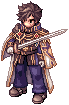 | Cursed King Schmidt | 110 | 9,200,000 | Medium / Demi-human / Neutral 3 |
| 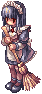 | Fallen Maid | 110 | 68,145 | Medium / Demon / Dark 2 |

|
Mad Knight | 110 | 46,350 | Large / Undead / Fire 3 |
| 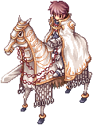 | Cursed Knight | 111 | 58,650 | Large / Demi-human / Holy 2 |
| 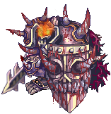 | Dark Guard | 175 | 1,152,000 | Large / Undead / Dark 4 |
Hard Mode
| Image | Name | Level | HP | Size / Race / Element |
|---|---|---|---|---|

|
Cursed King Schmidt | 170 | 45,000,000 | Medium / Demi-human / Neutral 3 |
| Fallen Maid | 110 | 68,145 | Medium / Demon / Dark 2 | |
| 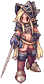 | Mad Knight | 175 | 1,140,000 | Large / Undead / Fire 3 |
| Cursed Knight | 175 | 1,380,000 | Large / Demi-human / Holy 2 | |
| Dark Guard | 175 | 1,152,000 | Large / Undead / Dark 4 |
Cards
| Card | Type | Effects |
|---|---|---|
| Armor Card |
Increases physical damage against fire property enemies by 40%. |
Equipment

All items are crafted through the OSC1052 vending machine.
| Image | Name | Description | Crafting |
|---|---|---|---|
| 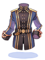 | King Schmidt's Suit[1] |
Increases physical and magical damage against medium and large size enemies by 10%.
MaxHP + 5%, MaxSP + 5%.
Defense: 150 Weight: 90 Required Level: 130 Jobs: Every Job |
10 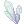 Temporal Crystals |
| 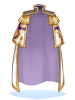 | King Schmidt's Manteau[1] |
Increases physical and magical damage against fire and shadow property enemies by 2% per 3 refine rate. Class: Garment Defense: 70 Weight: 60 Required Level: 130 Jobs: Every Job |
|

|
King Schmidt's Strong Insignia[1] |
Atk + 10%.
ATK + 25, Hit + 10.
Weight: 20 Required Level: 150 Jobs: Every Job |
5 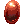 Contaminated Magics |
| 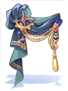 | King Schmidt's Divine Power Insignia[1] |
MATK + 10%.
MATK + 25, reduces variable casting time by 8%.
Weight: 20 Required Level: 150 Jobs: Every Job |
|
| King Schmidt's Hundred Luck Insignia[1] |
Increases critical damage by 7%.
Increases critical damage by 7%, ATK + 5%.
Weight: 20 Required Level: 150 Jobs: Every Job |
||
| 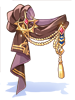 | King Schmidt's Rigid Insignia[1] |
MaxHP + 10%.
MaxHP + 5%, reduces delay after skill by 5%.
Weight: 20 Required Level: 150 Jobs: Every Job |
|
| 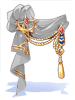 | King Schmidt's Flash Insignia[1] |
Increases attack speed by 5% (reduces delay after attack by 5%).
Increases attack speed by 3% (reduces delay after attack by 3%), CRIT + 7.
Weight: 20 Required Level: 150 Jobs: Every Job |
|
| 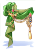 | King Schmidt's Thousand Bow Insignia[1] |
Increases long ranged physical damage by 7%.
Increases long ranged physical damage by 7%, ASPD + 1.
Weight: 20 Required Level: 150 Jobs: Every Job |
Enchanting
Any equipment obtained through OSC1052 can be enchanted at the OSC1127 vending machine. The costs for each single enchant are as follows:
- King Schmidt's Suit [1] = 5 Curse Devoured Crystals + 10 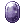 Coagulated Spells
- King Schmidt's Manteau [1] = 5 Curse Devoured Crystals + 10 Coagulated Spells
- 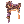 King Schmidt's Insignias (any) = 10 Curse Devoured Gemstone + 40 Contaminated Magic
Enchantments for all three equipment types are completely random and cannot be reseted. However, they can be rerolled (see below dedicated section)
While most are safe, the enchantment for the 2nd slot on Insignias (Accessories) has a 30% chance to fail, which will destroy the equipment. You can however choose to pay 10 times the original amount to eliminate the break chance altogether.
| King Schmidt's Suit [1] | ||
|---|---|---|
| 4th Slot Enchant | 3rd Slot Enchant | 2nd Slot Enchant |


| King Schmidt's Manteau [1] | ||
|---|---|---|
| 4th Slot Enchant | 3rd Slot Enchant | 2nd Slot Enchant |


King Schmidt's Strong,  Divine Power, Hundred Luck, Rigid, Flash or Divine Power, Hundred Luck, Rigid, Flash or  Thousand Bow Insignias Thousand Bow Insignias
| ||
|---|---|---|
| 4th Slot Enchant | 3rd Slot Enchant | 2nd Slot Enchant |
|
||


Special Enchants
King Schmidt's Insignia special enchants can combo with Temporal Boots enchants. These are static effects, and are always active.
| Special Enchant | Effect |
|---|---|
| Flash | If worn with  Speed of Light, increases critical damage by 30%. Speed of Light, increases critical damage by 30%.
|
 Strong Strong
|
If worn with  Bear's Might, increases physical damage against all sizes by 25%. Bear's Might, increases physical damage against all sizes by 25%.
|
| Thousand Bow | If worn with  Hawk Eye, +10% ATK. Hawk Eye, +10% ATK.
|
| Divine Power | If worn with  Runaway Magic, increases all property magic damage by 15%. Runaway Magic, increases all property magic damage by 15%.
|
| Rigid | If worn with  Muscular Endurance, reduces after cast delay by 10%. Muscular Endurance, reduces after cast delay by 10%.
|
| Hundred Luck | If worn with  Lucky Day, +2 ASPD. Lucky Day, +2 ASPD.
|
Rerolling Enchants
Once you have a fully enchanted piece, you can opt to reroll each individual enchant slots. Talk to the Royal Outfitter, outside the instance.
| Enchant reroll costs | |||||
|---|---|---|---|---|---|
| King Schmidt's Suit [1] | King Schmidt's Manteau [1] | King Schmidt's Insignias (any) | |||
| 4th Enchant Slot | 175 Curse Devoured Crystal + 25 Coagulated Spell | 4th Enchant Slot | 175 Curse Devoured Crystal + 30 Coagulated Spell | 4th Enchant Slot | 15 Curse Devoured Gemstone + 60 Contaminated Magic |
| 3rd Enchant Slot | 250 Curse Devoured Crystal + 120 Coagulated Spell | 3rd Enchant Slot | 300 Curse Devoured Crystal + 150 Coagulated Spell | 3rd Enchant Slot | 50 Curse Devoured Gemstone + 200 Contaminated Magic |
| 2nd Enchant Slot | 500 Curse Devoured Crystal + 250 Coagulated Spell | 2nd Enchant Slot | 600 Curse Devoured Crystal + 300 Coagulated Spell | 2nd Enchant Slot | 125 Curse Devoured Gemstone + 450 Contaminated Magic |
Recycling Equipment
You can recycle enchanted gears from Fall of Glast Heim, for a partial refund in materials, at OSC1198.
| Equipment | One enchantment | Two enchantments | Three enchantments |
|---|---|---|---|
| 3~6 Curse Devoured Crystals
|
6~10 Curse Devoured Crystals
|
9~15 Curse Devoured Crystals
| |
| 3~6 Curse Devoured Crystals
|
6~10 Curse Devoured Crystals
|
9~15 Curse Devoured Crystals
| |
|
|
2~6 Curse Devoured Gemstones | 4~12 Curse Devoured Gemstones | 6~18 Curse Devoured Gemstones |
You will also have the chance to get one of the following costume headgears randomly, whenever you recycle any equipment.
| Costume Drooping Schmidt | Costume Drooping Oscar | Costume Drooping Heinrich |
|---|---|---|